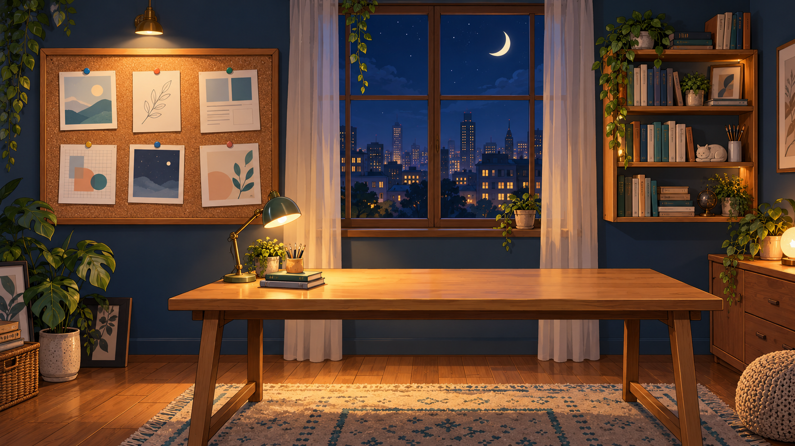

A LITTLE ROOM, A WORLD OF IDEAS
Masuk ke dunia Nest.
Klik benda di kamar untuk mengenal saya,
menjelajahi karya, atau memulai percakapan.

Mading Portfolio 6 sistem · 91 tampilan Riset Akademik Kajian & karya ilmiah Berkenalan denganNestiara Hubungi Nest Ada percakapan baru…
NESTIARA LIDYA KAKIHARY / NEST
Information Systems Professional
IT Project Manager · Web Developer
Membangun sistem digital yang lebih membantu pengguna.
Saya Nest, seorang profesional Sistem Informasi dengan pengalaman dalam pengembangan web dan pengelolaan proyek IT. Saya tertarik menghubungkan kebutuhan pengguna, proses bisnis, dan teknologi melalui sistem yang mudah digunakan.
01 / TENTANG SAYA
Dari kebutuhan,
menjadi solusi.
Sistem yang baik dimulai dari memahami orang yang menggunakannya.
Pengalaman saya mencakup pengembangan aplikasi web, komunikasi klien, koordinasi tim, dan pengelolaan ruang lingkup proyek.
02 / PENGALAMAN
Teknis bertemu
kolaborasi.
Belajar & berkembang
03 / PORTFOLIO SISTEM
Beragam kebutuhan.
Enam sistem.
Keuangan, sekolah, retail, rental, hunian, dan pembelajaran. Jelajahi tampilan serta alur sistem melalui screenshot asli.
Tidak ada sistem yang cocok. Coba kata kunci atau kategori lain.
04 / IDE PENGEMBANGAN AI
AI sebagai bantuan
dalam alur kerja pengguna.
Minat saya adalah menghadirkan bantuan yang relevan dengan data dan konteks pekerjaan. Pilih skenario untuk melihat arah pengembangannya.
Ide pengembangan · Belum tersedia pada sistemContoh respons ilustratif, tanpa koneksi model AI atau data akun.
05 / RISET & KARYA AKADEMIK
Rasa ingin tahu,
menjadi kajian.
Kajian kelayakan, kualitas sistem, keamanan IoT, metaverse, dan penerimaan teknologi.
06 / MULAI PERCAKAPAN
Ada ide yang ingin
kita wujudkan?
Saya terbuka untuk diskusi proyek, peluang kerja, dan kolaborasi di bidang sistem informasi.